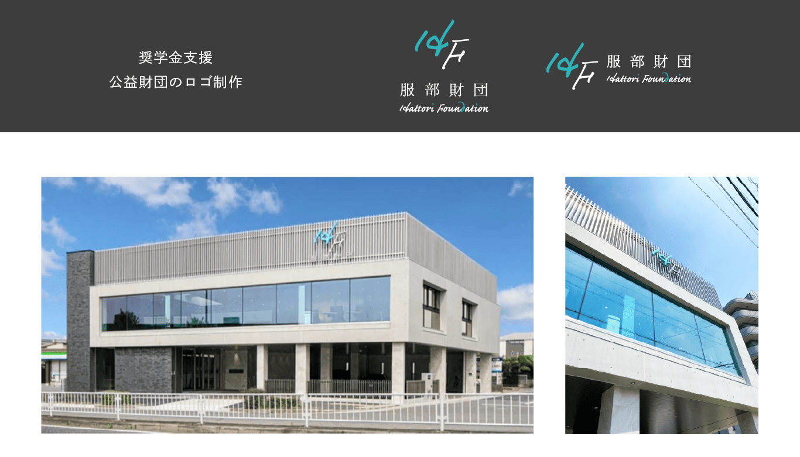
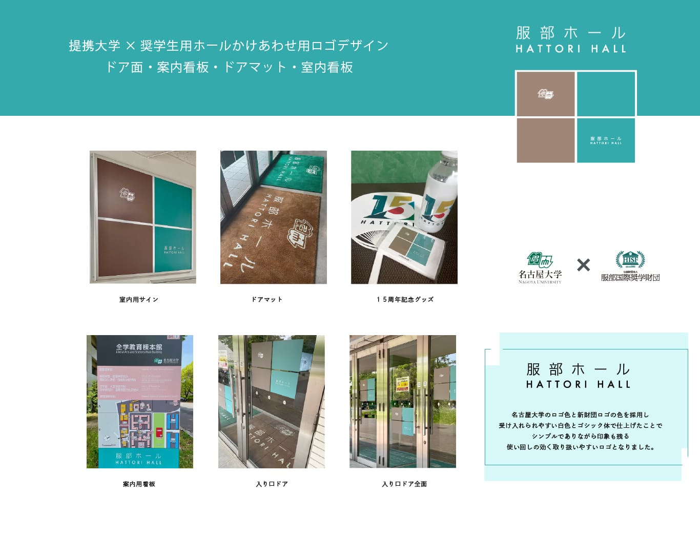

概要
創立者の直筆を活用し、ロゴ制作を行いました。
制作のポイント
創業者直筆の文字を活かしつつ、現代的で信頼感のあるロゴに仕上げました。
奨学生にも受け入れやすいフレッシュな色を取り入れながら、財団法人様ご要望に沿い、
ドアや看板やマットなど様々な媒体で活用できるように調整を行いました。

ロゴデザインと提携大学での活用における進行管理

創立者の直筆を活用し、ロゴ制作を行いました。
創業者直筆の文字を活かしつつ、現代的で信頼感のあるロゴに仕上げました。
奨学生にも受け入れやすいフレッシュな色を取り入れながら、財団法人様ご要望に沿い、
ドアや看板やマットなど様々な媒体で活用できるように調整を行いました。
